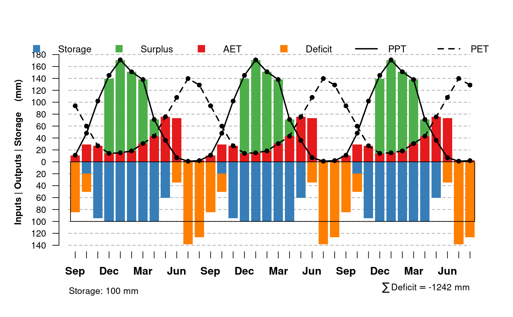
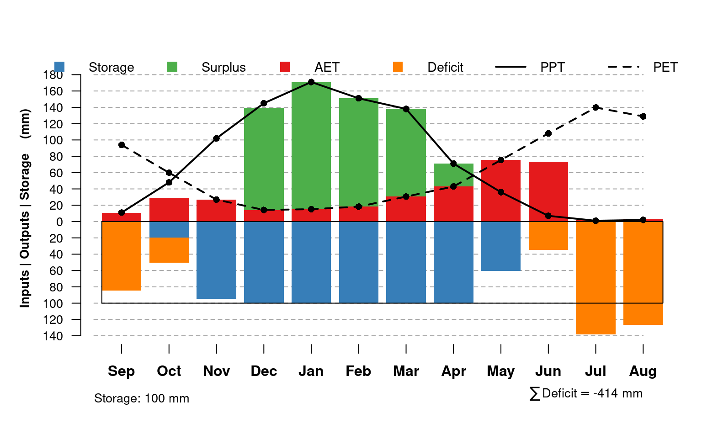
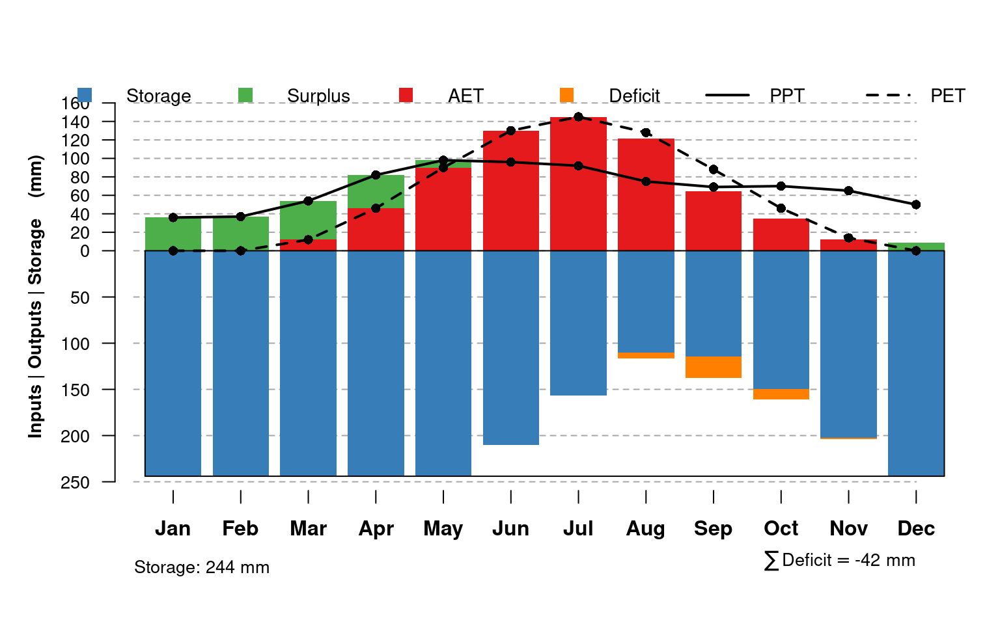

This function offers one possible visualization for the results of monthlyWB(). Note that "surplus" water is stacked on top of "actual ET", and "deficit" water is stacked below "storage". Calculate actual values for "surplus" and "deficit" from the figure like this:
surplus value = surplus - AET
deficit value = deficit - storage
output from monthlyWB()
available water-holding capacity (mm), typically the value used in monthlyWB() and stored as an attribute of WB
color for soil water ("storage)
color for surplus water
color for ET
color for deficit
plotting character for PPT and PET points
character expansion factor for PPT and PET points
point symbol color for PPT and PET points
point symbol background color for PPT and PET points
line type for PPT and PET lines (c(1, 2))
line width for PPT and PET curves
approximate number of tick marks on positive and negative y-axis
horizontal grid line color
scaling factor for month labels (x-axis)
scaling factor for legend
optional vector of y-axis limits, c(-min, max), typically used when comparing drastically different water balances in the same figure. Default limits are usually best for a single water balance plot.
nothing, function is called to generate graphical output
You may have to adjust figure margins and size to get all of the elements to "look right".
if(requireNamespace('hydromad')) {
## A shallow / droughty soil near Sonora CA
# 100mm (4") AWC
AWC <- 100
PPT <- c(171, 151, 138, 71, 36, 7, 1, 2, 11, 48, 102, 145)
PET <- c(15.17, 18.26, 30.57, 42.95, 75.37, 108.05, 139.74, 128.9, 93.99, 59.84, 26.95, 14.2)
# water-year
# three years
x.wb <- monthlyWB(AWC, PPT, PET, S_init = 0, starting_month = 9, rep = 3)
x.wb[x.wb$mo == 'Sep', ]
# plot all three years
plotWB(x.wb)
# water-year / last iteration
x.wb <- monthlyWB(AWC, PPT, PET, S_init = 0,
starting_month = 9, rep = 3,
keep_last = TRUE
)
# plot
plotWB(x.wb)
## Drummer series (Fine-silty, mixed, superactive, mesic Typic Endoaquolls), southern IL
AWC <- 244
PPT <- c(36, 37, 54, 82, 98, 96, 92, 75, 69, 70, 65, 50)
PET <- c(0, 0, 12, 46, 90, 130, 145, 128, 88, 46, 14, 0)
# using calendar year
x.wb <- monthlyWB(AWC, PPT, PET, S_init = 0,
starting_month = 1, rep = 3,
keep_last = TRUE
)
plotWB(x.wb)
}
#> Loading required namespace: hydromad


